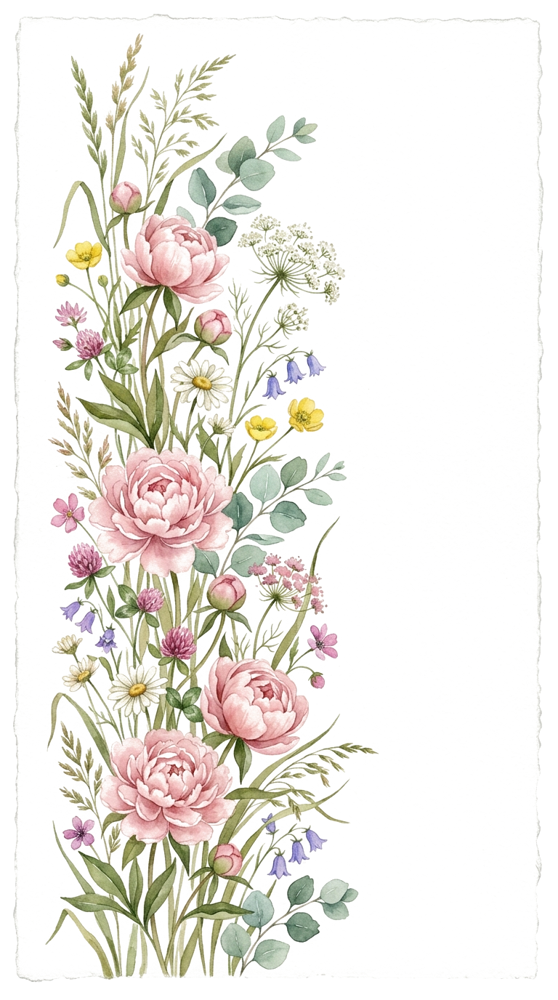
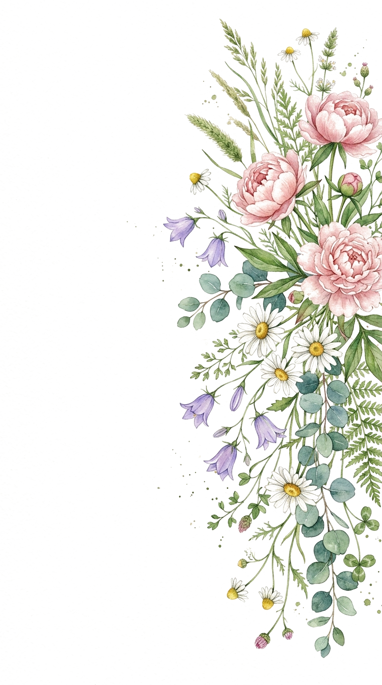
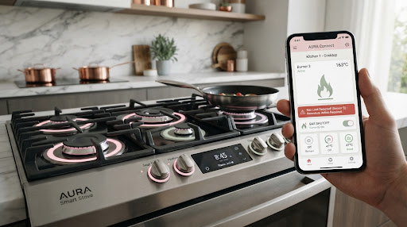
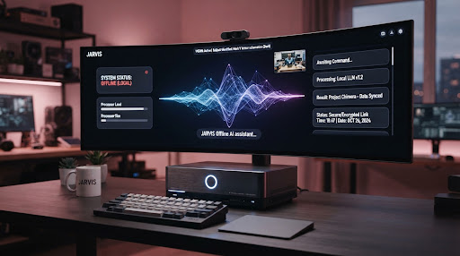
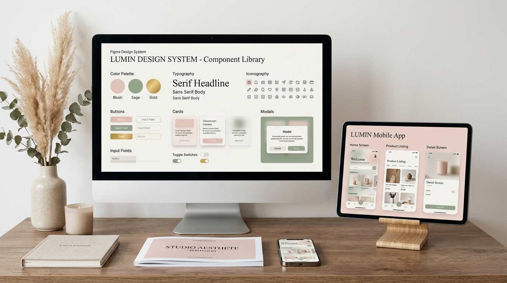
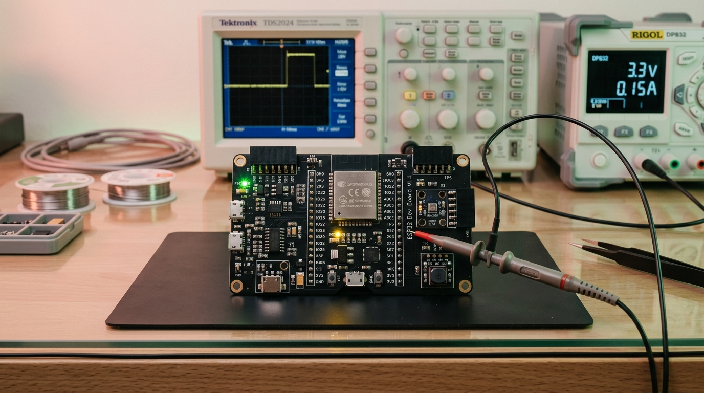

Where silicon hardware blossoms with human grace...
Hi, I'm Sona Mary Jose. Electronics and Communication engineer fusing low-level ESP32 firmware, sensor physics, and offline AI intelligence with serene, museum-tier UI/UX interfaces.
St. Joseph's College of Engineering & Technology, Palai
Interact directly with simulated sensor telemetry modeled after Sona's ESP32 Smart Gas Stove and offline JARVIS assistant.
A documented track record across embedded microcontrollers, acoustic sensor architectures, and production-grade interface systems.

Engineered a safety and convenience retrofit for traditional gas stoves using an ESP32 microcontroller. Built an acoustic whistle-detection sensor system with automated solenoid shutoff, integrated MQ-4 gas leakage sensors, and dual buzzer + instant mobile alert telemetry.

TechAshy Hackathon winner. Integrated Faster-Whisper for real-time speech recognition and LLaVA for desktop screen vision, completely offline within a glassmorphism Tkinter HUD.

Collaborated with web development and product teams to architect intuitive user flows, comprehensive Figma component libraries, wireframes, and conducted user research testing.

Completed intensive project readiness at IICT GmbH Training Academy, Germany, developing hybrid hardware-software embedded AI pipelines. Certified NPTEL Elite in Sensor Technologies: Physics, Fabrication, and Circuits by IISER Bhopal (score 69%).
A calibrated blend of low-level hardware fluency, modern data processing, and humanistic visual design.
Microcontroller firmware, circuit routing, sensor interfacing, and physical validation.
Extensive data analytics, speech/vision edge AI models, and embedded C programming.
User research, design system tokenization, wireframing, and interactive prototyping.
Community service, rapid hackathon delivery, and state-level innovation participation.
IICT GmbH Training Academy, Germany (Hybrid) — Intensive readiness program executing hybrid hardware-software AI modules.
Infotact Solutions (Remote) — Architected Figma wireframes, mockups, and conducted user research testing for production web platforms.
Main Flow Services & Technologies Pvt. Ltd. — Comprehensive data-driven analytics utilizing Pandas and NumPy.
St. Joseph's College of Engineering and Technology, Palai (Autonomous), Kerala.